Quran Tracker, in de app
Bekeken, onbewerkte schermcaptures uit de native Android-controles. Open een afbeelding voor de volledige opname. De beelden tonen verschillende controlepunten; de actuele geïnstalleerde build staat in het QA-verslag.
Het grijze tandwiel ‘Tools’ dat op sommige beelden staat, is de Expo-debugoverlay. De selectiegrepen en het menu ‘Copy / Share’ zijn echte Android-bediening.

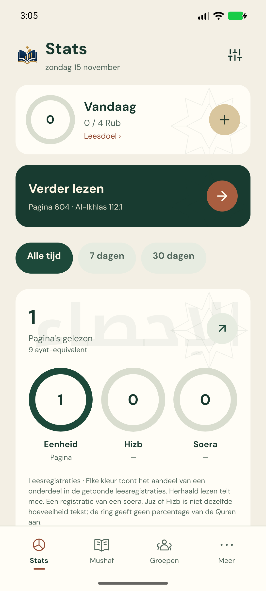
De zelfstandige Android-release
Laatste APK op de testemulator, zonder Metro of debugoverlay. De bestaande testregistratie en leespositie bleven behouden.

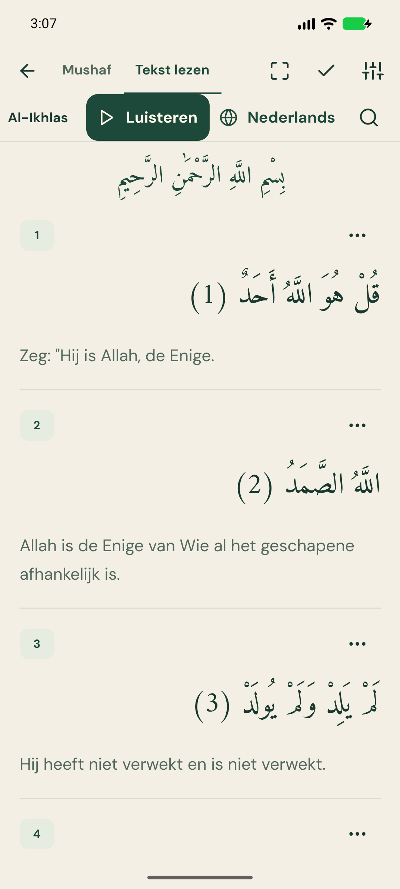
Boek en tekst in dezelfde lezer
De release toont de Nederlandse vertaling en Luisteren direct naast de soera. Werkelijk afspelen startte vanuit de boekweergave en ging automatisch door naar volgende soera’s.

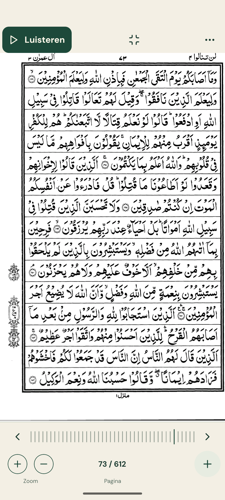
De echte PDF in fullscreen
Gecontroleerd in de definitieve Android-release: de oorspronkelijke PDF blijft scherp na terugkeren uit selectiemodus, zoomen en bladeren. Er wordt geen woordlaag over de scan verzonnen.

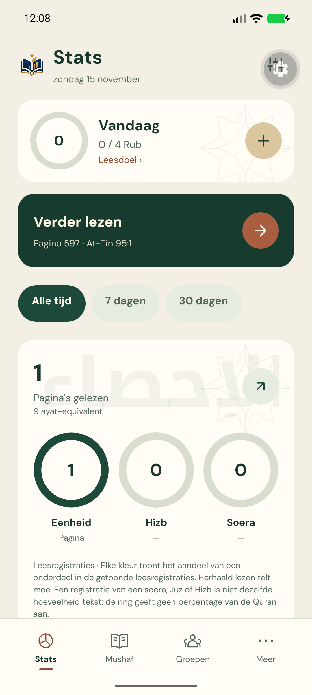
Stats met drie ringen
Eén bestaande paginaregistratie, naast de ringen voor Hizb en soera. De tekst onder de ringen licht toe wat de registratieverdeling betekent.

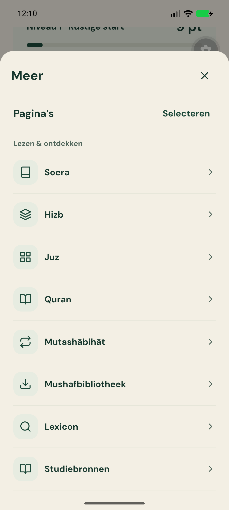
Meer, gegroepeerd
Lees- en studiepagina’s staan in een doorlopende lijst. De knop Selecteren opent de keuze voor de onderste navigatie.

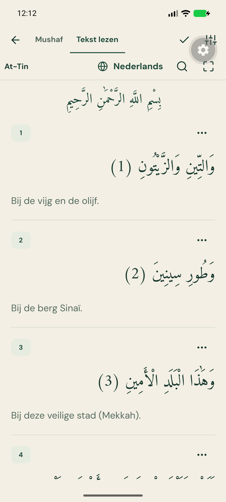
De eerste aya meteen zichtbaar
At-Tin 95:1 met Nederlandse vertaling. Wisselen tussen Nederlands en Engels en terug behield dezelfde aya; schermvullend lezen en Android Back zijn gecontroleerd.

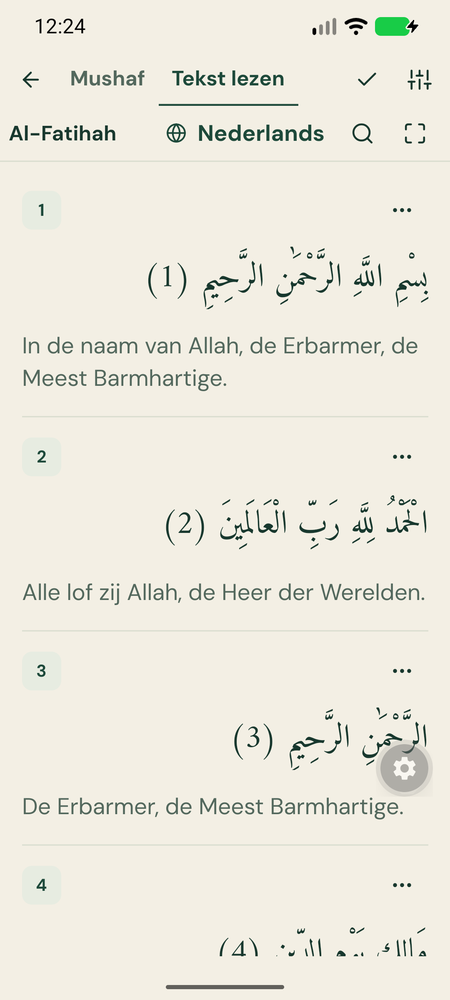
Systeemtekst op 1,3
Al-Fatihah 1:1 blijft met vertaling en beide bedieningsrijen zichtbaar bij systeemlettergrootte 1,3.
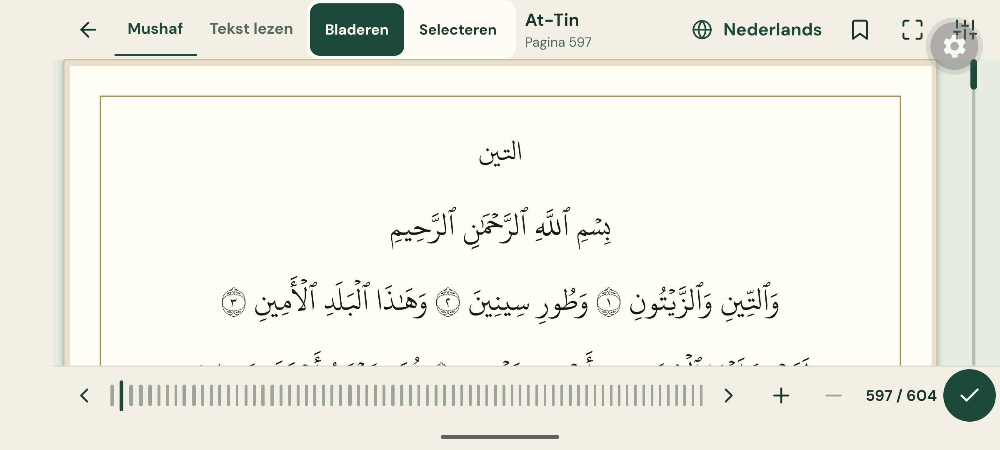
Het boek in landscape
De zichtbare boekruimte meet hier 736 van 1080 schermpixels. Paginastreepjes, zoom en leesvink blijven bereikbaar. De verticale rail is apart van 0 naar 69 procent versleept; deze capture bewijst geen landscape-paginaswipe.

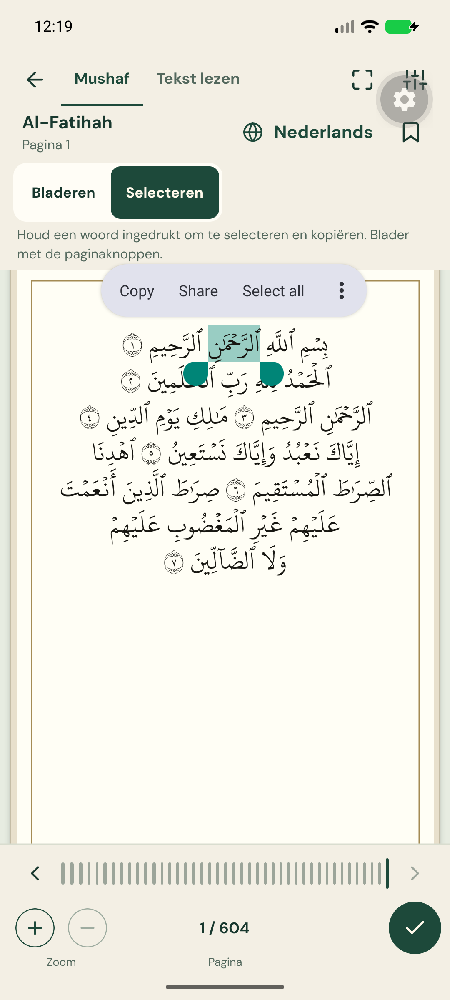
Native tekstselectie
Selecteren en lang indrukken tonen echte Android-grepen bij 1:1:3. In Bladeren is de paginaswipe van 1 naar 2 gecontroleerd.

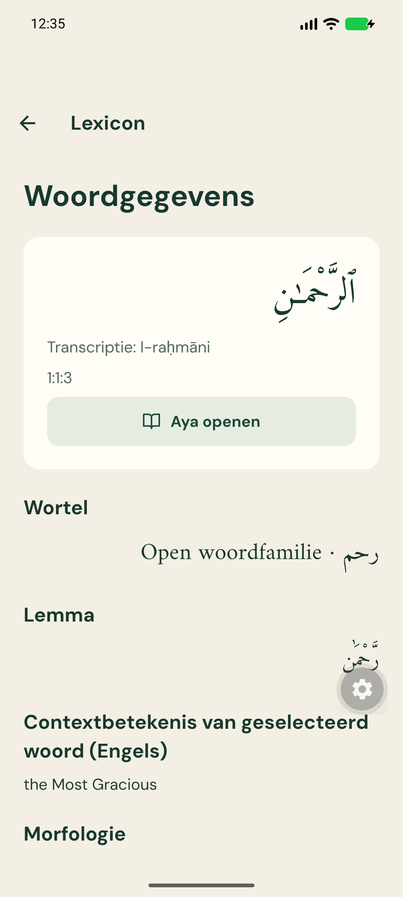
Van woord naar bron
QAC laadt voor exact 1:1:3. Ook het volledige Lane-artikel is geopend; dat bronbewijs staat in het QA-verslag. Eén Android Back keerde terug naar de schermvullende Mushaf.

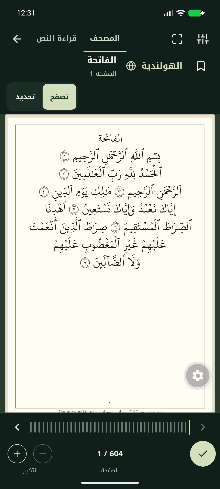
Arabisch en donker thema
Arabische bediening en leesrichting zijn bekeken in boek en tekst. De drukpagina behoudt haar eigen lichte bronweergave. Deze controle gebruikte systeemlettergrootte 1,0.

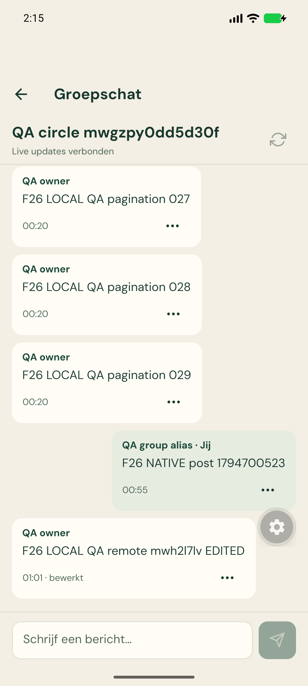
Groepschat naast de feed
Chronologische berichten gebruiken hetzelfde beveiligde tekstberichtcontract als de Kotlin-app. Deze debugcontrole gebruikte uitsluitend fictieve accounts op de lokale testbackend. Twee afzonderlijke clients ontvingen elkaars berichten.

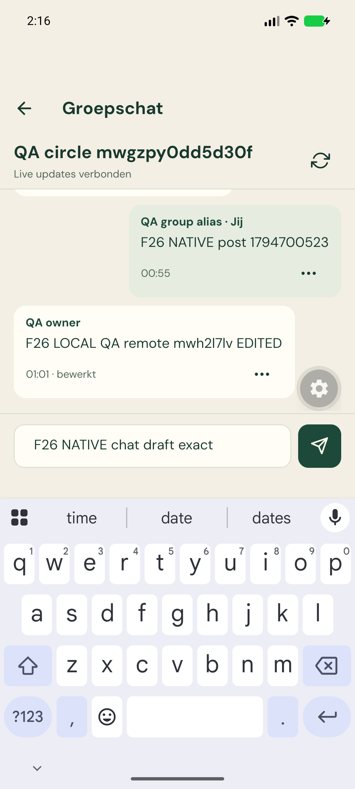
Blijven typen met het toetsenbord open
Invoer en verzenden blijven boven het toetsenbord. Het ongestuurde concept keerde exact terug na verlaten en opnieuw openen van de chat. Er staan geen accountgegevens in deze capture.